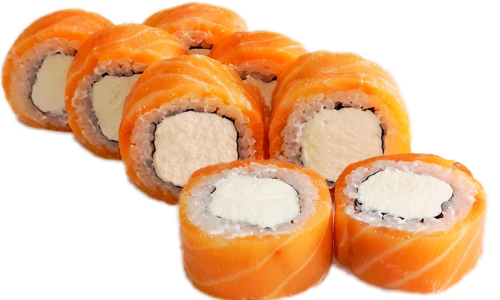

ФИЛАДЕЛЬФИЯ
Ролл Филадельфия — это один из самых популярных видов суши, который сочетает в себе нежные и яркие вкусы. Основными ингредиентами являются:
- Рис — для ролла используется специальный суши-рис, который варится до мягкости и приправляется уксусом.
- Нори — морская водоросль, в которую заворачиваются остальные ингредиенты.
- Крем-сыр — именно он придаёт роллу характерный вкус и кремовую текстуру. Чаще всего используется сыр Филадельфия.
- Лосось — свежий или копчёный, он добавляет роллу насыщенный вкус и аромат.
- Огурец — для свежести и хрусткости.
- Авокадо — добавляет кремовость и богатый вкус.
Ролл Филадельфия часто подают с соевым соусом, васаби и имбирём. Его можно украсить кунжутом или икрой тобико для дополнительного вкуса и эстетики. Этот ролл идеально подходит как для любителей суши, так и для тех, кто только начинает знакомиться с японской кухней. 🍣😊